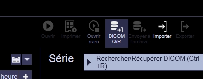
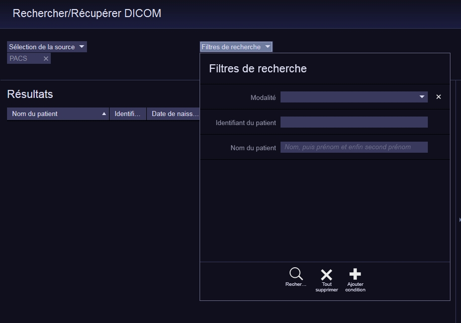
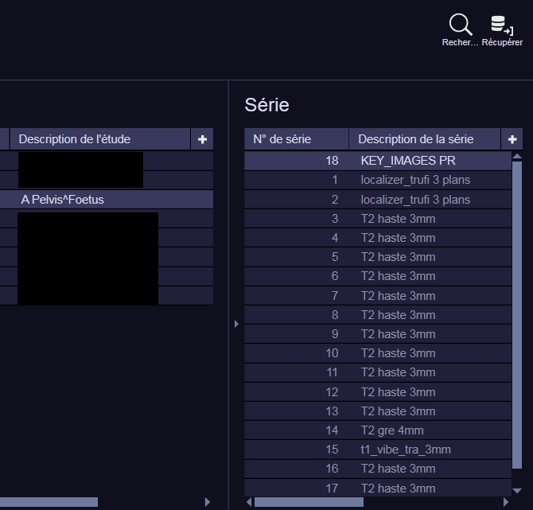
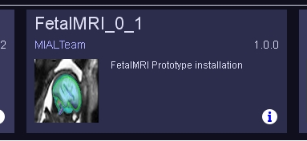
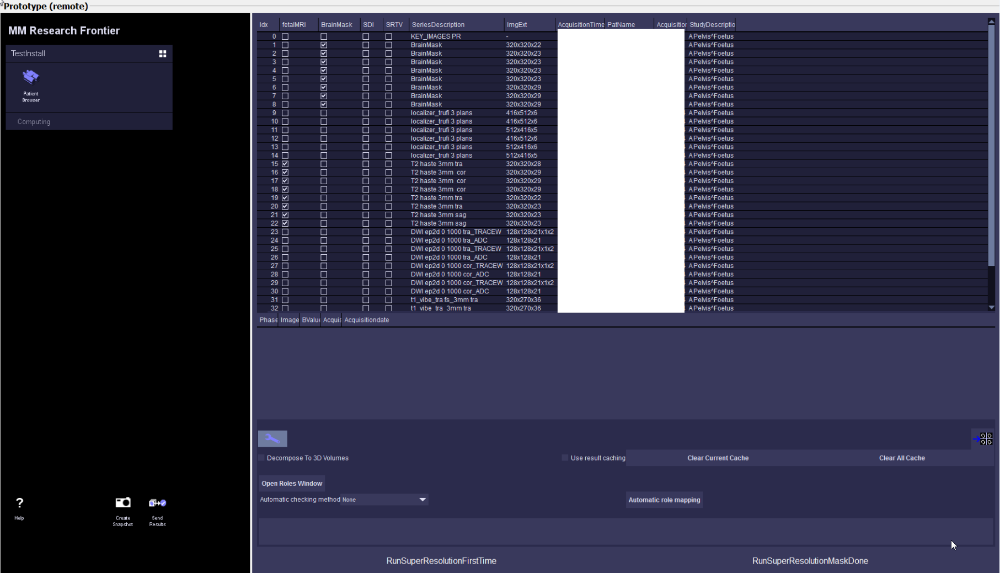
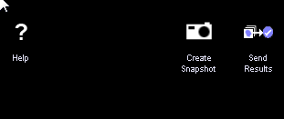

Using SyngoVia¶
| author | FetalMRI |
| package | CHUV/FetalMRI |
Purpose
How to use SyngoVia to get the data from the PACS, run the SuperResolution, push back the results on the PACS
Get Data From the PACS
Click on the DicomQR icon on the top right of the main syngovia window.
Then in research filter add the ipp or patient name, with an "*", otherwise it will miss "research data"
 At CHUV Fetal MRI are called Pelvis Foetus
Run The Prototype
Query the data by typing *IPP or *PatientName (don't forget the "*" otherwise it will not query research data such as already performed mask)
Select all Series you want to send to the FetalMRI prototype, including the one starting by "!ResearchOnly_"
Then right click -> Dispaly in Read Only -> MM Research Frontier
Click on the FetalMRI Prototype
The you have the patient browser module:
You have to check that all T2 haste 3mm have been selected. sometimes the series descriptions has been modified and then automatic detection doesn't work.
if some mask have been done before and you have selected all studies, including the "!ResearchOnly" when starting the prototype it should detect them automatically
To start the first Interface (ImageOrientationInterface) you have two button at the bottom
-RunSuperResolutionFirstTime (if masks haven't been done yet or if you think you will modify them)
-RunSuperResolutionMaskDone (if masks have been done you do not intend to modify them)
In the first case, denoising is done on all images selected, and on the full images, so it's taking some time
In the second case, denoising is done only on images having a brain mask, and only on the part of the image in the mask, everything outside the mask will be set to 0 and then not processed
Send Results from Frontier To Syngovia
Click on the SendResults at the bottom of the control panel
You can export the data with the prefix "!ResearchOnly_" on all Dicom Tag, but you have to select the second choice, without the prefix, to send results to the patient case study.
by default the solution with the prefix is selected, you have to uncheck it and select the second one (without the prefix) if you want it to go in the patient case study
the flag !ResearchOnly is already added to the serie description by the fetal mri prototype
Push Results to the PACS
Select the serie that you want to push, and click on the "Export icon", select network and pacs.
TroubleShooting
How to send the error reports from frontier to MialTeam
Go to Configuration Panel

Go to Frontier and click on Server Configuration and Service

Accept the certificate

At the bottom of the page, click on Download Latest, and send the .zip to the Mial Team